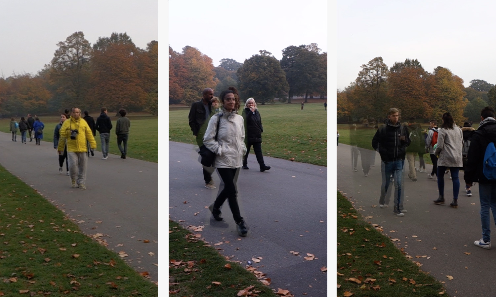
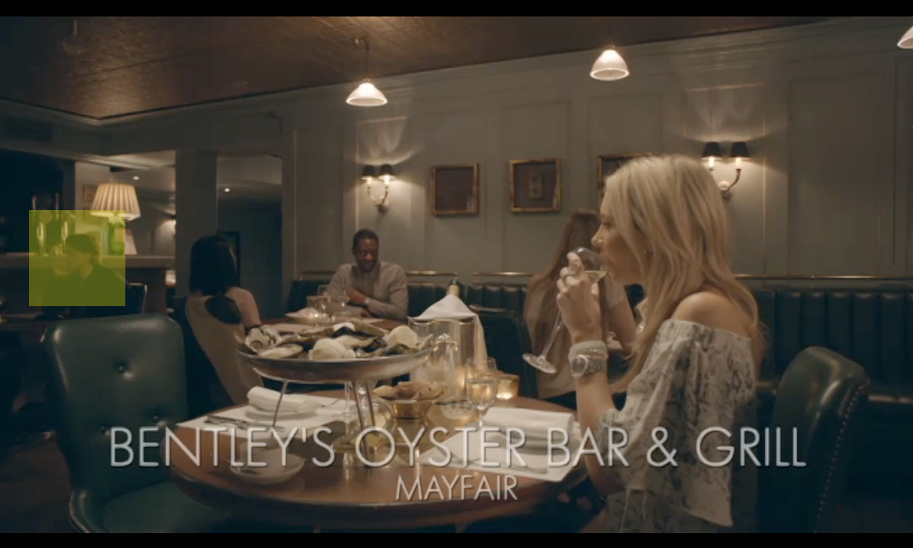
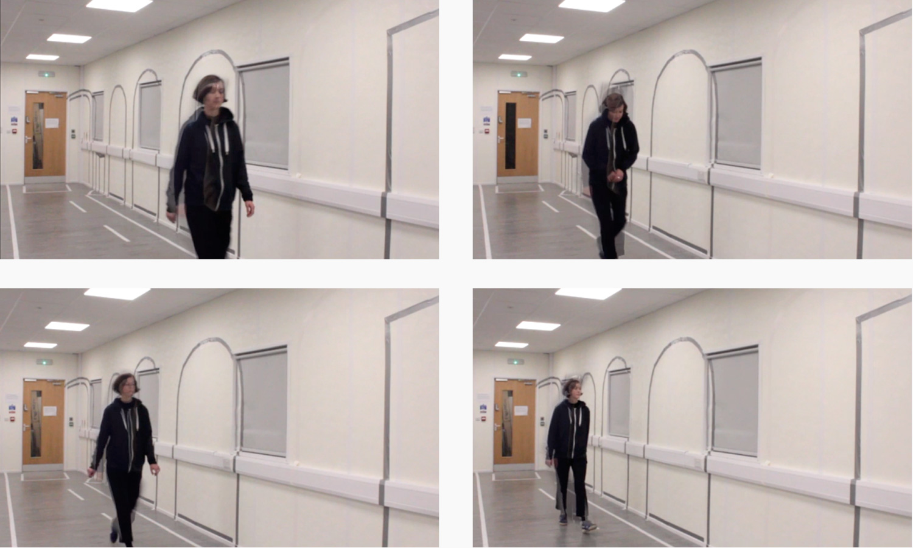

The blur between performances of the self
MA SELF DIRECTED
A research project into the behavioural changes and constructs that happen when we become aware of being watched.

screenshot from research footage
Through observing our behavioural habits with social media, I had become interested in how people performed certain aspects of their lives in front of a camera. Conducting research in the various ways that people do this, from catching the moment that people become aware that they are in a public space, to going as an extra on reality tv shows where cast members play versions of themselves on and off of the camera, I wanted to see if I could draw out and capture this behaviour.
left: footage of unconscious walker right: footage of conscious walker
Using promenade (walking) as a start, a way that in the past people presented themselves in the public arena, I began a series of iterative experiments trying to record and compare the way people’s behaviour changes when they are aware of being filmed. I surreptitiously filmed people as they walked through a park, approached them to ask if they would allow to me to re-record them re-walking the same stretch, and then filming them doing so to compare their gait and body language.
I collected a set of dual footages of these consciously observed and unobserved people, and became interested in what they showed when I started overlaying the two. You could observe the blur between the two pieces of footage; an illustration of the change. In order to gain more accurate comparisons, I devised more exact and pronounced ways of capturing this blur.
tracing the areas of blur between aware and unaware
overlayed footage of unconscious and conscious walkers
research on hyper-reality tv 'made in chelsea'
Conducting one last experiment to see how far I could manipulate the blur between the two moving footages; I began collecting repeated walking performances of my participants, and using improvisation exercises in between to see how it might change their performance. I held a workshop with an elaborate construction to capture the participants' movement before they arrived, and recorded their varying performances during the session to then play back overlaid with their unconscious original arrival. The results were exhibited in Tangled Systems, a Goldsmiths MA show.

top: setting of unconscious filming, bottom: recreation of hallway and performance space
different performances overlayed with original unconscious footage